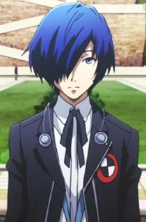
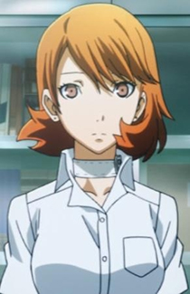
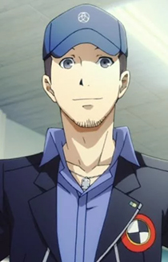
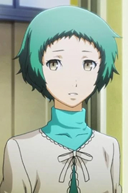
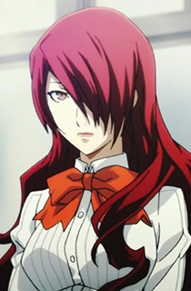
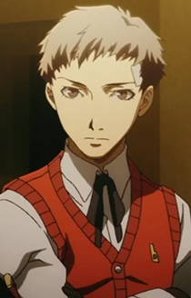
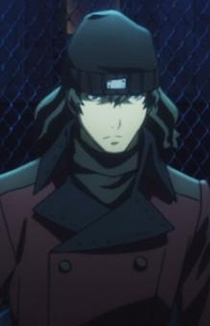
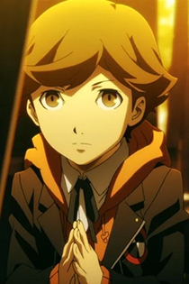
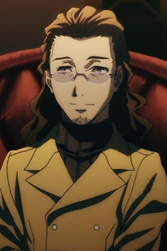

Characters
Makoto Yuki
Makoto Yuki is the protagonist of Persona 3. Throughout the movie, Makoto is depicted as being very apathetic. Being severely traumatized to the point of indifference by witnessing the deaths of his parents as a child, he initially has extremely neutral viewpoints on life and death and is uncaring of either. He does not have a will to live or die, and he even once told Yukari that he doesn't care if he dies. Even in battle, he often takes on tasks with little, if any sense of self-preservation, taking a large amount of risks that could get him killed. Makoto is also shown to be unable to feel any form of connection towards others, not really seeing the point of why people would get close to each other. As such, he isolates himself and is often found in secluded locations. This is especially true when people actually try to make friends with him, as he goes out of his way to ignore them and/or avoid them at all costs. Later on, though, he eventually realizes the importance of people’s lives and the bonds that he has with his friends.

Yukari Takeba
Yukari is very kind in nature and cheerful, and has a positive outlook on life. However, her kindness has its limits, as she's prone to mood swings and getting annoyed over trivial things, often expressing this annoyance with sarcasm. This is mainly seen whenever she interacts with Junpei, as even though she and Junpei are friends, they seem to clash more often than not, which usually results in her even using an insulting nickname "Stupei." Despite her cheerful exterior, Yukari is secretly a very lonely girl. Although she deeply values bonds and relationships with others, she's afraid of letting anyone get too close to her with fear that they'll find out about her shady past. Makoto is an exception to this, as the two can relate to each other due to their shared losses. Certain events, side material, and even future entries show she is in love with him. Eventually, she starts to open up to those around her, particularly Mitsuru, who she initially doesn't like very much but eventually becomes best friends with. Yukari despises the Dark Hour, and compares being a Persona-user to trading innocence for power, since you can no longer turn away from the things you don't want to see.

Junpei Iori
Junpei is goofy, perverted, immature, upbeat, and is a self-proclaimed ladies' man, to which he frequently tries to hit on girls, with little to no success. Despite this, he is capable of being kind and caring, and he often cracks jokes and calls people "dude" to make them feel better. After school, he is typically seen reading manga at the manga cafe or at his dorm or playing video games. He can also be very reckless and hot-headed at times, and fail to think things through as a result. However, Junpei does have his sensible moments as well, such as when he repeatedly warns Yukari that going to the back alley behind Port Island Station is dangerous, when she considers it an "adventure."

Fuuka Yamagishi
Initially, Fuuka is a very reserved, shy and timid girl who rarely speaks up. Before she joined S.E.E.S., this made her an easy target for school bullies, to the point of being locked in the school gym by "friends", which resulted in her getting trapped in Tartarus. However, she is also a friendly student once others open up to her and very kind-hearted, even more so than Yukari. She is very polite, and almost always uses honorifics when addressing people. Despite being quiet and not being involved with fighting and physical combat, she tries to help her friends in any way possible such as using her Persona's abilities to scan the statistics and weaknesses of Shadows, showing her to be very diligent and dedicated. Fuuka is a very forgiving person, which is shown by the fact that she holds no grudge whatsoever against Natsuki, one of her bullies, for bullying her and trapping her in Tartarus, though to be fair Natsuki was sincerely repentant about what she did to her. She loves computers and technology, and can almost always be seen in the dorm on her laptop. She's the type who would rather stay inside connected to her computer and tinkering with electronics, rather than going outside to shop or any outside activities in general for that matter, due to her shyness. While never shown directly, it is implied that Fuuka is an expert hacker, as she manages to hack top-level Kirijo Group archives in order to find out the truth about SEES and Tartarus, and can piece back together video files purposefully deleted by third parties, such as the true final message left behind by Yukari's father.

Mitruru Kirijou
Mitsuru is calm, confident, mature, responsible, wise and very intelligent for her age. However, she may be interpreted by some as slightly arrogant, conceited, even cold-hearted or overconfident. As events unfold, this may be a front of maturity, due to her assumed role as the leader of SEES. Mitsuru has a streak of strict conduct. One way that this is shown is how she is the only member of SEES who formally addresses the others by their last names, with the exception of Akihiko, as the two are good friends and have known each other since junior high. Eventually, she becomes more familiar with the other SEES members and refers to Yukari on a first-name basis, and the others' on occasion. Mitsuru is also very insistent with the team keeping their grades up, going so far as to sign them up for summer classes behind their backs. Mitsuru is also outspoken and has zero tolerance for prejudice.

Akihiko Sanada
Akihiko is serious and determined, and a well-respected upperclassman known for cracking small jokes on occasions. Of all members of the group, he is the most prone to sarcasm, even moreso than Yukari. He tends to show his excitement for a big challenge, something that eventually rubs off on Junpei. He is eager to train and fight, often to a fault. However, Akihiko is a kind young man who will go out of his way to help someone, which is shown when he was willing to take any chance to save Fuuka from Tartarus despite having never met her before, even after Junpei and Yukari pointed out that she had been there for ten days (or ten hours from her perspective) and most likely couldn't have survived. Akihiko also has an aggressive side, which he usually demonstrates when dealing with Shadows. He never gives up and always tries to get stronger in order to protect what is dear to him. This is mainly stemmed from his feelings of guilt for not being able to save his sister, Miki, from a fire as a kid. As he puts it, he knows what it's like to feel powerless and he never wants to feel that way again, though this often results in him overworking himself. Akihiko is also shown to be very smart, if not quite on Mitsuru's level, as he is consistently shown to get good grades and often picks up on things that Mitsuru misses, like giant Shadows appearing during the full moon and why Fuuka disappeared. He even tells Makoto that a strong mind is just as important as a strong body.

Shinjiro Aragaki
Shinjiro is Akihiko's childhood friend and was an orphan at the same orphanage. He's a reliable and serious character whose cold exterior masks his weaker, gentler self. Shinjiro's difficult past weighs him down, causing him to constantly push others away with a tough-guy act. Various parts of his personality are revealed throughout the story, and he is difficult for others to figure out, unless he's with Akihiko. Despite his normally calm and quiet demeanor, it is shown that he easily loses his cool whenever he's with his childhood friend, as they often get into fights, which usually resulting to childish banters. He is also often dragged into his friend's antics, mostly involving competing over just about anything. During those times, his competitive nature surfaces. He never really admits it, but Shinjiro also apparently hates losing.

Ken Amada
Despite his young age, Ken is very intelligent and mature. It is shown that this is a coping mechanism due to the death of his mother at a young age, which more-or-less forced him to give up his childhood. This is mainly is noted by Yukari, who can't believe he's in elementary school and claims that Junpei, who is a full six years older than him, could learn a thing or two from him. Fuuka also notes his maturity, and finds him cute as a result of it. He is very polite to others, and never misses a chance to show respect where respect is due. He is also honest, diligent, and deeply caring towards his peers, particularly the members of SEES. Ken is shown to like and care a great deal for animals, such as Koromaru. Although Ken is very mature, he still has several qualities that fit with his age and they do occasionally show through. For example, he seems to like to watch a children's show, Featherman R, but he prefers to keep it a secret from the others. He also seems to collect a lot of the Featherman R figurines, as well, which he also keeps hidden. He finds a role-model in Akihiko, whom he admires for his boxing and fighting talents, because Akihiko's strength gives Ken the courage to move on and become stronger as well. Overall, Ken gives off the impression that he's just trying too hard to be something he's not: an adult. Evidence to suport this claim lies in his reasoning of why he uses spears in battle: so that "he'll be on even ground with an adult."

Shuji Ikutsuki
Since SEES is technically seen by others as a club, Ikutsuki acts as the adviser. Uopn first impression and throughout most of the story, he is quite polite and sophisticated, never needing to change his tone or manner. He is friendly, always accompanied with a gentle smile and a set of bad puns and unfunny jokes to provide comedy relief when it is needed, and perhaps not needed. It is implied the chairman knows more than he lets on but nonetheless he is the main source of knowledge for the group regarding all things related to the Dark Hour and thus acts as guidance for SEES. Unlike other members of SEES, he is unable to summon a persona, as he does not possess "The Potential" that the other members of SEES do, as he tells Makoto that in order to study the Dark Hour further alongside Persona-users, he used artificial methods.